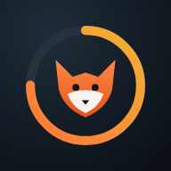

—
Bonjour.
🔥 0 jExemple
Énergie
0
sur — kcal
0kcal restantes
0repas notés
—score qualité moyen
0 gfibres
Macronutriments
Ta journée heure par heure
Vitamines & minéraux
% des valeurs nutritionnelles de référence (VNR UE, adulte). Estimations à partir de la composition moyenne des aliments.
Repas du jour
Analyse nutritionnelle IA
Scanne ton assiette.
Active l'analyse IA
L'analyse des photos utilise Claude, via ta propre clé API Anthropic (payée à l'usage, quelques centimes par photo).
- Ouvre console.anthropic.com et crée une clé.
- Ajoute un peu de crédit et fixe une limite de dépense.
- Colle la clé dans l'onglet Profil.
Prends ton repas en photo
Vue de dessus ou à 45°, assiette entière dans le cadre, un couvert visible pour l'échelle.
Type de repas
Le renard attend ton assiette
Il identifie chaque aliment, estime le poids des portions, repère les graisses cachées et calcule calories (±50 kcal), macros, fibres, vitamines et minéraux.
Analyse en cours… 0 s
Identification des aliments
Estimation des portions (g)
Graisses de cuisson & sauces
Calcul nutritionnel (CIQUAL / USDA)
Contrôle de cohérence Atwater
Journal alimentaire
Ton historique.
—
Ton bilan.
Calories par jour tirets = objectif
Répartition énergétique
Protéines & fibres par jour (g)
Régularité écart à l'objectif
±10 % ±25 % au-delà
Bilan du nutritionniste
Le renard analyse ta période : équilibre des macros, fibres et micronutriments, régularité. Il te donne 3 actions concrètes.
Aliments les plus fréquents
Profil, objectifs & réglages
Tes cibles.
Clé API Anthropic Non configurée
La clé reste uniquement sur cet appareil et n'est envoyée qu'à api.anthropic.com. Crée une clé dédiée avec une limite de dépense sur console.anthropic.com.
Installer sur iPhone

Ajoute Fox à ton écran d'accueil
- Ouvre ce lien dans Safari.
- Touche le bouton Partager (carré avec flèche).
- Choisis Sur l'écran d'accueil, puis Ajouter.
Apparence & données
Tes repas sont enregistrés sur cet appareil uniquement. Exporte une sauvegarde de temps en temps.
Supprimer définitivement tous tes repas de cet appareil ?